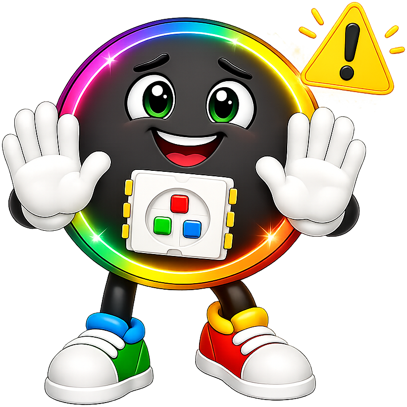
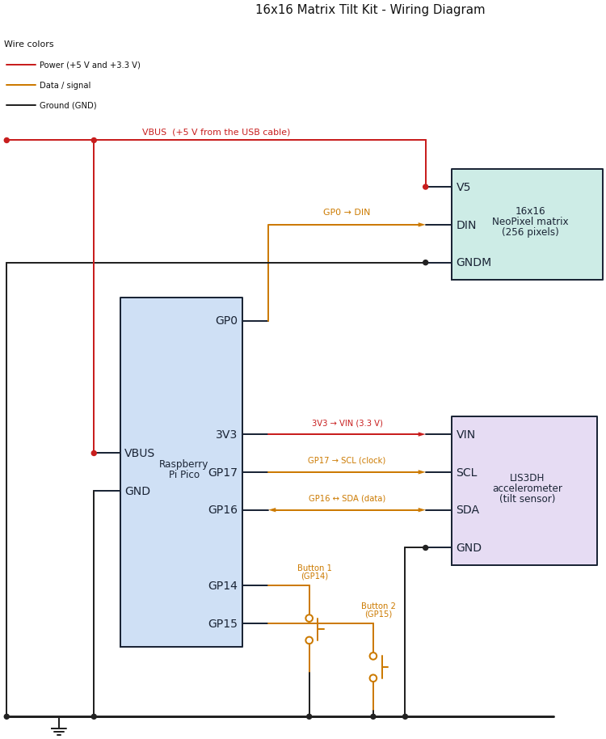

16x16 Matrix Tilt Kit

This picture was drawn by a computer simulator, so the lights on your real kit may look a little different.
Pixel says...
 Welcome, light-maker! This kit has 256 lights and a sensor that feels which way is down.
Tip it, and your lights will roll, slosh, and race. Let's light this up!
Welcome, light-maker! This kit has 256 lights and a sensor that feels which way is down.
Tip it, and your lights will roll, slosh, and race. Let's light this up!
What you'll learn
After this guide you will be able to:
- Wire a light matrix, a tilt sensor, and two buttons to a Raspberry Pi Pico.
- Test each part by itself before you put them together.
- Turn a row and a column into a pixel number.
- Read the tilt sensor and use it to move lights.
- Run ten different light shows from one program.
What you'll need
- The kit parts in the table below
- A computer with Thonny installed
- A USB data cable (see the warning below)
- About 90 minutes for the first few labs
Kit Contents
Check each part off before you start.
| Part | Approximate Cost | What it does |
|---|---|---|
| Raspberry Pi Pico | $4.00 | The small computer that runs your code |
| 16x16 NeoPixel matrix | $10.00 | 256 lights in 16 rows and 16 columns. Each light is a pixel |
| LIS3DH accelerometer | $5.00 | A sensor that feels tilt and movement |
| Push buttons (QTY=2) | $0.50 | Buttons you press to change modes |
| Breadboard and jumper wires | $3.50 | Connect the parts with no soldering. Your kit may use a different kind of wire |
| Micro USB cable | $2.50 | Carries your code and the power |
| Total cost | $25.50 |
These are single-kit prices from October 2026. Prices change, and buying parts in packs costs less.
Check your USB cable

Make sure your cable is a data cable, not a charge-only cable. A charge-only cable powers the Pico, but your computer cannot see it. That looks exactly like a broken Pico.What Is an Accelerometer?
An accelerometer is a sensor that measures how fast something speeds up or slows down. It also feels the pull of gravity, which is always pulling toward the ground.
Think of a tiny ball inside a box. Tip the box, and the ball rolls toward the low side. The accelerometer works like that ball. It tells your code which way is down.
The sensor reports its answer in a unit called g. One g is the pull of Earth's gravity. When the kit lies flat, the sensor reads about 1 g straight down. When the kit stands on its edge, the same 1 g shows up along a different direction. Your code reads those numbers and moves the lights.
How the Parts Connect

Follow the colors: red wires carry power, amber wires carry data and button signals, and black wires are ground. A dot means two wires are joined. Wires that cross with no dot are not joined.
Do these steps in order. Never wire a Pico that has the USB cable plugged in.
Step 1: Place the Pico
- Unplug the USB cable from the Pico.
- Push the Pico into the breadboard with the USB connector at the top.
- Check that the pins on both sides sit in different breadboard rows, so no two pins touch.
With the USB connector at the top, the pin in the top-left corner is pin 1, called GP0. Each pin has a number and a name. The names that start with GP are general purpose pins (pins your code can control). The numbers count down the left side, then up the right side.
Step 2: Wire the 16x16 matrix
The matrix has three wires. Connect them in this order: ground first, then power, then data.
- Connect the matrix GND (ground) wire to any
GNDpin on the Pico. Pin 38 works well. - Connect the matrix 5V (power) wire to
VBUS, which is pin 40. This is the 5 volts that comes from the USB cable. - Connect the matrix DIN (data in) wire to
GP0, which is pin 1.
| Matrix wire | Goes to | Pico pin |
|---|---|---|
| GND (ground) | Any GND pin |
Pin 38 works well |
| 5V (power) | VBUS |
Pin 40 |
| DIN (data in) | GP0 |
Pin 1 |
Watch out!
A matrix has an input end and an output end. Look for the letters DIN (data in) and DOUT (data out), or for small arrows. Wire the Pico to DIN. A matrix wired to DOUT stays dark, and the wiring looks perfect the whole time.
Step 3: Wire the accelerometer
The accelerometer talks to the Pico over two wires. This way of talking is called I2C (say "eye-squared-see"). One wire is SDA, the data wire. The other is SCL, the clock wire that keeps both sides in step.
- Connect the accelerometer VIN (power in) pin to
3V3 (OUT), which is pin 36. - Connect the accelerometer GND pin to any
GNDpin. Pin 23 is right next to the other wires. - Connect the accelerometer SCL pin to
GP17, which is pin 22. Some boards print SCK instead of SCL. They mean the same thing. - Connect the accelerometer SDA pin to
GP16, which is pin 21.
| Accelerometer pin | Pico pin | Pico name | What it does |
|---|---|---|---|
| VIN | Pin 36 | 3V3 (OUT) |
Power in, 3.3 volts |
| GND | Pin 23 | GND |
Ground |
| SCL (or SCK) | Pin 22 | GP17 |
Clock |
| SDA | Pin 21 | GP16 |
Data |
Use 3.3 volts for the sensor
Connect the accelerometer to 3V3 (OUT), never to VBUS. Many sensor boards can be damaged by 5 volts.
Only the matrix uses the 5 volt VBUS pin.
Step 4: Wire the two buttons
Push each button into the breadboard so its legs straddle the center channel, the groove down the middle. Each button needs two wires.
- Connect one side of Button 1 to
GP14, which is pin 19. - Connect the other side of Button 1 to the ground rail.
- Connect one side of Button 2 to
GP15, which is pin 20. - Connect the other side of Button 2 to the ground rail.
| Button | One side goes to | The other side goes to |
|---|---|---|
| Button 1 | GP14 (pin 19) |
The ground rail |
| Button 2 | GP15 (pin 20) |
The ground rail |
You do not need resistors. The Pico has internal pull-up resistors. These tiny resistors inside the chip hold a pin at 3.3 volts until something pulls it down. So a pin reads 1 when the button is up and 0 when you press it. Pressed means zero!
These buttons have four legs, in two joined pairs. Wire across the button, from one corner to the opposite corner, and you will always be on the right pair.
The Pin Map
Every program in this kit reads its pin numbers from one file called config.py.
# Moving Rainbow Configuration file
# Filename: config.py
# Version: 1.0.0
#
# This file contains the hardware configuration for the 16x16 matrix
# accelerometer kit. It is imported by each program.
# 16x16 NeoPixel matrix (256 pixels)
NEOPIXEL_PIN = 0
MATRIX_WIDTH = 16
MATRIX_HEIGHT = 16
NUMBER_PIXELS = MATRIX_WIDTH * MATRIX_HEIGHT
# Many 16x16 panels are wired in a zig-zag: row 0 runs left to right,
# row 1 runs right to left, and so on. This panel is NOT: every row runs
# left to right. (Test 10 showed it: with True, the two rows of the dot
# moved in opposite directions.) Run 06-walk-pixels.py to see the pixel order.
SERPENTINE = False
# Largest color number that is safe when ALL 256 pixels are lit at once.
# 256 pixels at (8, 8, 8) draw about 480 mA, close to what a USB port supplies.
# Programs that light only a few pixels can use bigger numbers.
LEVEL = 8
# Two mode buttons, each wired from its GPIO pin to GND
BUTTON_PIN_1 = 14
BUTTON_PIN_2 = 15
# Accelerometer on I2C bus 0 (GP16 is SDA, GP17 is SCL)
# LIS3DH accelerometer. 0x19 is the usual address (0x18 if SDO is tied to GND).
# Run 02-probe.py to check.
ACCEL_I2C_ID = 0
ACCEL_SDA_PIN = 16
ACCEL_SCL_PIN = 17
ACCEL_ADDRESS = 0x19
Because every program starts with import config, you never have to remember pin numbers.
You write config.NEOPIXEL_PIN and the right number fills in. If your wiring is different,
change the number in this one file and every program follows along.
Get the Code onto the Pico
Uploading means copying files from your computer onto the Pico. The Pico keeps them even after you unplug it.
The quickest way uses a helper program named mpremote. A grown-up helper can run this command from the kit's folder:
# copy every program in this folder onto the Pico
./upload-code.sh
It should end with Uploading 21 file(s) to Pico... and then a list of files.
You can also copy files one at a time with Thonny. Open a file, choose File > Save as, pick Raspberry Pi Pico, and keep the same file name. You do not need all 21 files for the first labs:
| Labs | Files the Pico needs |
|---|---|
| Lab 1 | Only the lab file itself |
| Labs 2 to 10 | config.py, plus the lab file |
| Labs 11 and 12 | config.py, kit.py, the lab file, and its module (sloshing_water.py or tilt_a_maze.py) |
| Lab 13 | Everything: config.py, kit.py, 13-modes.py, and all the mode modules |
Your Labs
Do the labs in order. Each one tests one idea, and the first few test your wiring. If something breaks later, you already know which parts work.
| Lab | Program | What you do |
|---|---|---|
| Lab 1: Blink the Onboard LED | 01-blink-onboard-led.py |
Check that Python runs on your Pico |
| Lab 2: Hardware Probe | 02-probe.py |
Test your wiring, your buttons, and the sensor |
| Lab 3: Button Test | 03-button-test.py |
See your two buttons work |
| Lab 4: First Pixel | 04-first-pixel.py |
Light one pixel red, green, and blue |
| Lab 5: Fill Colors | 05-fill-colors.py |
Light all 256 pixels safely |
| Lab 6: Walk the Pixels | 06-walk-pixels.py |
Watch one pixel visit all 256 spots |
| Lab 7: X-Y Corners | 07-xy-corners.py |
Turn a column and a row into a pixel number |
| Lab 8: Row and Column Sweep | 08-row-column-sweep.py |
Sweep lines of light across the matrix |
| Lab 9: Accelerometer Print | 09-accel-print.py |
Read the tilt sensor |
| Lab 10: Accelerometer Bubble | 10-accel-bubble.py |
Slide a dot by tilting the kit |
| Lab 11: Sloshing Water | 11-sloshing-water.py |
Make a pan of water that sloshes |
| Lab 12: Tilt-a-Maze | 12-tilt-a-maze.py |
Roll a ball through nine mazes |
| Lab 13: Modes | 13-modes.py |
Switch between ten light shows with your buttons |
Power Safety
A USB port can supply about 500 milliamps (mA). One pixel at full white uses about 60 mA. All 256 pixels at full white would need more than 15,000 mA, which is 15 amps. That is far too much for USB.
So the programs in this kit keep the color numbers small. LEVEL = 8 in config.py is the biggest
color number that is safe when all 256 pixels light at once. Labs that light only a few pixels can use bigger numbers.
Lab 5 shows you the math.
Troubleshooting
| What you see | What to try |
|---|---|
| Thonny cannot find the Pico | Try a different USB cable. Use a data cable, not a charge-only cable |
ImportError: no module named 'config' |
Save config.py onto the Pico (see Get the Code onto the Pico) |
| The matrix stays dark | Check that the data wire goes to DIN, not DOUT. Check the 5 volt and ground wires |
| Colors come out in the wrong order | Run Lab 4. See the note there about color order |
Lab 2 says No I2C devices found |
Check VIN, GND, SCL, and SDA. Check that SDA and SCL are not swapped |
| A button does nothing | Run Lab 3. Check both legs are on the correct side of the center channel |
| A dot rolls the wrong way when you tilt | Change FLIP_X, FLIP_Y, or SWAP_XY in kit.py (or in Lab 10) |
| The Pico restarts when many pixels light | The lights are drawing too much power. Lower LEVEL in config.py |
Words to Know
| Word | What it means |
|---|---|
| Pixel | One light on the matrix |
| Matrix | A grid of lights in rows and columns |
| Accelerometer | A sensor that feels tilt and movement |
| g | One g is the pull of Earth's gravity |
| I2C | A two-wire way for parts to talk to the Pico |
| GPIO | A pin your code can read or control (short for general purpose input/output) |
| Module | A Python file that other programs can load and use |
| Config file | One file that holds every pin number and setting |
Check your understanding
- Which pin does the matrix's data wire connect to? Which pins connect the accelerometer?
- Why does the accelerometer connect to
3V3 (OUT)and not toVBUS? - A button reads 1 when you do nothing. What does it read when you press it?
- Why does one file called
config.pyhelp when your wiring is different?
Kit complete!
 You have wired a whole kit: lights, a sensor, and buttons. Now let's teach them tricks!
You have wired a whole kit: lights, a sensor, and buttons. Now let's teach them tricks!
What's next: Start with Lab 1: Blink the Onboard LED.
Source Code
The whole kit lives in one folder, src/kits/16x16-matrix-accel/.
The wiring diagram is drawn by circuit-diagram.py in that folder.